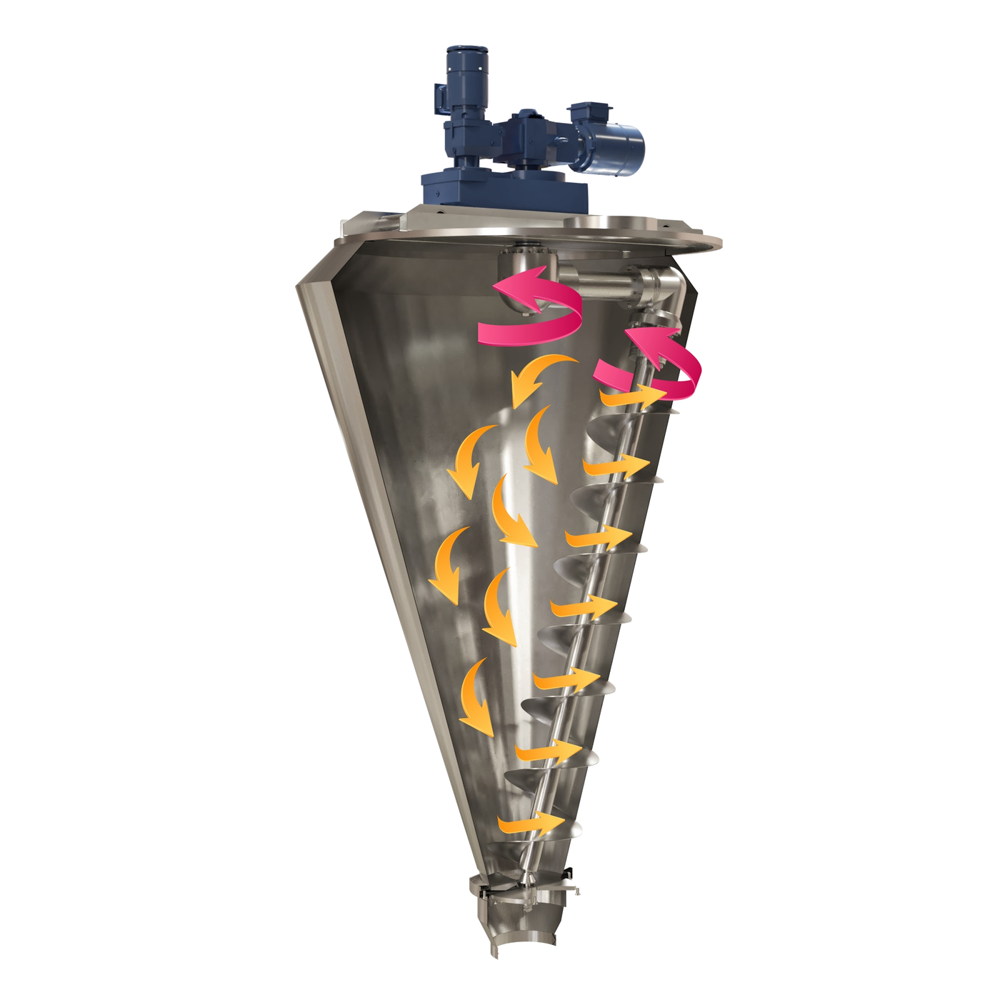

Kvalitní procesní a mísicí technika pro chemický, farmaceutický a potravinářský průmysl. Vlastní výroba v ČR, stroje šité na míru, lokální servis.
Kónický šnekový mísič - obíhající rameno s rotujícím šnekem podél kuželové stěny nádoby. Pro práškové a sypké směsi, premixy a granuláty. Samovyprazdňovací, šetrný k produktu.

Rychlá a účinná homogenizace probíhá pohybem ramene a míchacího šneku. Míchaný materiál je rotací šneku nabírán ode dna nádoby vzhůru. Šnek se přitom otáčí podél vnitřní kuželové stěny nádoby a posouvá a promíchává produkt. Produkt poté vlivem gravitace klesá zpět ke dnu nádoby.
Základní provedení dle oficiálního datasheetu PERRYmix. Rozměry a hmotnosti jsou orientační, finální specifikaci doladíme podle aplikace.
| Model | Objem [L] | Pohon ramene [kW] | Pohon šneku [kW] | Ø nádoby [mm] | Výška nádoby [mm] | Celková výška [mm] | Hmotnost [kg] |
|---|---|---|---|---|---|---|---|
| HV50 | 50 | 0,25 | 0,75 | 732 | 968 | 1364 | 250 |
| HV100 | 100 | 0,25 | 0,75 | 820 | 1118 | 1515 | 300 |
| HV200 | 200 | 0,37 | 1,5 | 1178 | 1565 | 2195 | 650 |
| HV300 | 300 | 0,37 | 1,5 | 1300 | 1780 | 2410 | 700 |
| HV600 | 600 | 0,37 | 1,5 | 1418 | 2205 | 2835 | 750 |
| HV1000 | 1 000 | 0,37 | 2,2 | 1560 | 2434 | 3064 | 800 |
| HV1200 | 1 200 | 0,37 | 3,0 | 1821 | 2600 | 3230 | 850 |
| HV1500 | 1 500 | 1,5 | 4,0 | 1753 | 2750 | 3380 | 900 |
| HV2000 | 2 000 | 1,5 | 5,5 | 1900 | 2975 | 3605 | 950 |
| HV3000 | 3 000 | 1,5 | 5,5 | 2180 | 3450 | 4035 | 1 000 |
Uvedené hodnoty odpovídají základnímu provedení. Provedení na míru (celonerezové rameno, AISI 316L, ATEX pohon, pneumatický výpustní ventil) hmotnost i rozměry mění - konkrétní parametry potvrdíme v cenové nabídce.
Co pro vaše odvětví dokáže vertikální homogenizátor HV. Klikněte na obor a rozbalí se detail.
Ve výrobě potravin homogenizátor HV stejnoměrně rozmíchá práškové a sypké suroviny tak, aby každá šarže měla shodné složení, barvu i chuť. Šetrné míchání kónickým šnekem nepoškozuje citlivé složky a zabraňuje oddělování jemných frakcí. Dodáváme v potravinářském provedení - kontaktní části z nerezové oceli AISI 304 (na míru AISI 316L), hladce broušené svary a snadné čištění mezi šaržemi.
Pro farmaceutickou výrobu zajišťuje homogenizátor vysoký a opakovatelný stupeň homogenizace - rozhodující pro rovnoměrné rozložení účinné látky v celé dávce. Samovyprazdňovací efekt a rychlá demontáž šneku usnadňují čištění a snižují riziko křížové kontaminace mezi šaržemi. Kontaktní části dodáváme v jakosti AISI 316L.
V chemické výrobě stroj rovnoměrně promíchá prášky, pigmenty a sypké chemické směsi i při rozdílné velikosti a hustotě částic. Pro prostředí s nebezpečím výbuchu dodáváme pohon a převodovku v provedení ATEX a pneumaticky ovládaný výpustní ventil.
Při výrobě krmiv a agrochemie homogenizátor rychle a stejnoměrně zamíchá malé podíly aditiv (vitaminy, minerály, léčiva) do velkého objemu nosné směsi. Vysoký stupeň homogenizace a krátký mísicí čas zajišťují, že je účinná složka rovnoměrně rozložena v každém kilogramu produktu.
01Vlastní výroba v ČR - stroje šité na míru, od specifikace po předání.
02Lokální servisní zázemí - dílny v Hradci Králové, originální náhradní díly.
03Inženýrské řešení na míru - úpravy provedení dle požadavků zákazníka.
04Jednoduchá a bezpečná obsluha - samovyprazdňovací efekt, rychlá demontáž šneku.
05Export do 8+ zemí EU a Asie - reference v chemii, farmacii a potravinářství.
Transparentní 4 kroky. Žádné skryté poplatky, žádné překvapení v dodávce. Závazná cena včetně dokumentace a servisu od první nabídky.
Pošlete základní parametry - objem, typ směsi, aplikaci. Pošleme zpětnou vazbu do 24 hodin.
1 denOnline nebo na místě. Doladíme specifikaci, materiálové provedení, ATEX pohon a rozsah úprav na míru.
3-5 dnůZávazná cenová nabídka, technický návrh, dodací lhůta a podmínky servisu.
48 hodinVýroba v ČR, kontrola, doprava a uvedení do provozu. Školení obsluhy a předání dokumentace.
dle specifikaceNejčastější dotazy procurement, R&D a QA před zahájením poptávky.
Řada HV zahrnuje 10 typových velikostí od HV50 (50 L) po HV3000 (3 000 L). Konkrétní velikost a provedení doladíme podle vaší aplikace a objemu dávky.
Stroj je kónický šnekový mísič - obíhající rameno s rotujícím míchacím šnekem v kónické nádobě. Hodí se zejména pro práškové a sypké směsi: potraviny, koření, léčiva, krmné premixy, práškové barvy a pigmenty.
Základní provedení: nádoba, šnek, traverza a kryty z nerezové oceli AISI 304; rameno a pohon z uhlíkové oceli s potravinářským nátěrem. Na míru dodáváme celonerezové rameno a kontaktní části v jakosti AISI 316L.
Ano. Volitelně dodáváme pohon a převodovku do prostředí s nebezpečím výbuchu, pneumaticky ovládaný výpustní ventil a další úpravy podle vašich požadavků.
Ano. Jsme výrobce, servisní zázemí máme v Hradci Králové. Náhradní díly dodáváme jako výrobce, dlouhodobá dostupnost je samozřejmostí.
Když nebudeme správný partner, řekneme vám to rovnou. Lepší upřímná zpráva v týdnu 1 než ztracené 3 měsíce ve fázi specifikace.